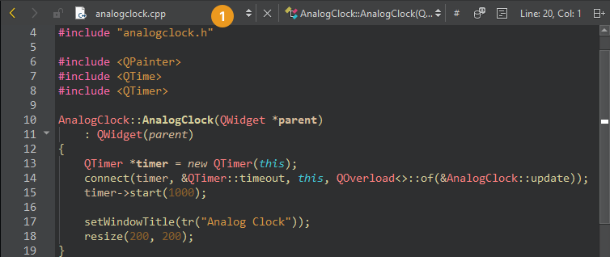

Parse files
When you open a project, Qt Creator parses the source files in the project and performs a semantic analysis to build up the information that it needs for code editing services, such as navigation and finding usages.
Select parse context
Code might be interpreted differently in different contexts. A file can be used by different projects or subprojects with different defines, or it can be included in the context of C, C++, Objective-C, or Objective-C++.
To change the active parse context, select an available parse context on the Edit mode toolbar in #. The button is visible only when several parse contexts are available.

To reset the parse context, go to # > Clear Preferred Parse Context.
If the information needed for parsing the project is still incomplete or incorrect, go to Additional Preprocessor Directives to add preprocessor directives.
Reparse externally changed files
If source files are modified from outside Qt Creator, the open files (1) are reparsed automatically. To update other files, go to Tools > C++ > Reparse Externally Changed Files to update the code model.
See also How To: Edit Code, Edit Mode, Clang Code Model, and Code Model.